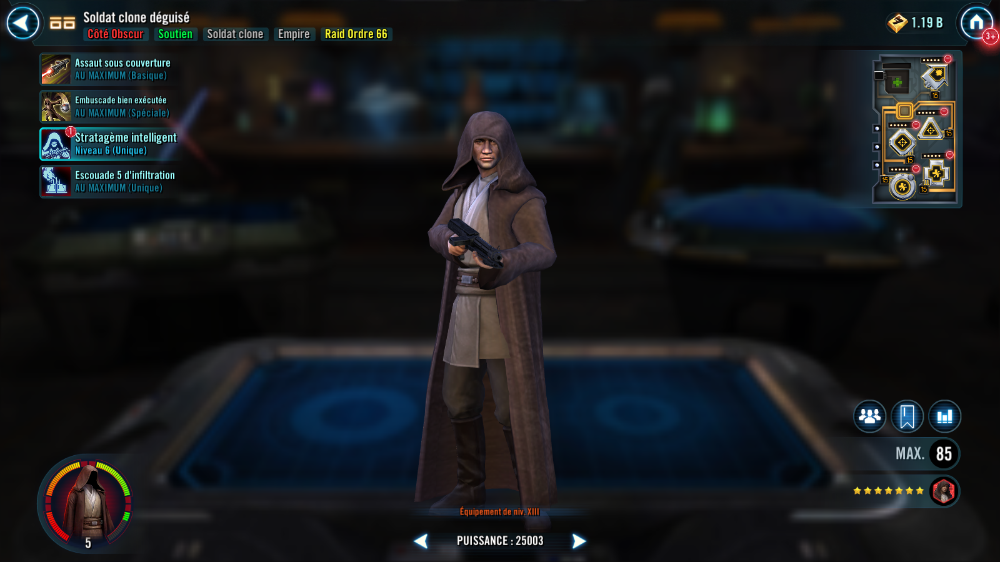
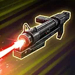

Disguised Clone Trooper
A Dark Side Clone Trooper who uses Stealth to ambush unsuspecting Jedi
A Dark Side Clone Trooper who uses Stealth to ambush unsuspecting Jedi


Deal Special damage to target enemy. If Disguised Clone Trooper had Ruse, Stun them for 1 turn, which can't be evaded or resisted.
If target enemy was already Stunned or Ability Blocked and all allies are Lord Vader, Grand Moff Tarkin, and/or Dark Side Clone Troopers, dispel all buffs on them and inflict Order 66 for 2 turns, which can't be copied, dispelled, evaded, or resisted.
Deal Special damage to all enemies and deal 10% more damage for each stack of Damage Over Time on them, 20% if Disguised Clone Trooper had Ruse (stacking, max 200%). All Dark Side Clone Trooper allies gain Advantage for 2 turns.
If the target enemy was:
- Light Side: Inflict them with Healing Immunity for 2 turns. If Disguised Clone Trooper had Ruse, Healing Immunity can't be dispelled or resisted and inflict them with a stack of Damage Over Time for 2 turns.
- Galactic Republic: Reduce their Speed by 15 for 2 turns. If Disguised Clone Trooper had Ruse, reduce their Speed by another 15 and inflict them with a stack of Damage Over Time for 2 turns.
- Jedi: Inflict them with Offense Down for 2 turns. If Disguised Clone Trooper had Ruse, Offense Down can't be dispelled or resisted, and inflict them with a stack of Damage Over Time for 2 turns.
At the start of each of Disguised Clone Trooper's turns, if he was Stealthed, he recovers 15% Health and Protection, and gains Ruse until the end of that turn. When Disguised Clone Trooper attacks, he loses Stealth.
At the start of each enemy's turn, if Disguised Clone Trooper had Stealth, all other Dark Side Clone Trooper allies gain Retribution, until the end of that enemy's turn. If that enemy was a Jedi, Disguised Clone Trooper gains Tenacity Up until the end of that enemy's turn, which can't be copied, dispelled, or prevented.
Omicron Boost : While in Territory Wars: Ruse no longer expires until the end of battle. If an enemy inflicted with Order 66 is defeated, ally Lord Vader and Dark Side Clone Troopers take a bonus turn.
Ruse: This effect triggers additional effects in abilities. Ruse is removed at the end of the turn.
At the start of encounter, Disguised Clone Trooper gains 30% Offense and if there was a Galactic Republic enemy, he Stealths for 2 turns. At the end of each of his turns, if Disguised Clone Trooper didn't have Ruse, he Stealths for 3 turns. If the target enemy had Order 66, Disguised Clone Trooper deals Massive damage when attacking. If the target enemy was Jedi or Light Side Unaligned Force User, he deals an additional instance of Massive damage per Relic Amplifier level.